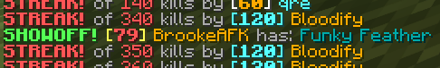

Two players with dyed Mystic Pants and supporter stars, both features of Pit Supporter.
Pit Supporter From the Hypixel Pit WikiPit Supporter is a way to support the development of The Pit with real-life money. Costing 1,000 Hypixel Gold ($10 USD), it contains minor features to help increase the quality of life of those who purchase it.
The following features are included in Pit Supporter: Supporter Star: In chat and in the tab list of in-game lobbies, players have a yellow star (✬) next to their name. The star can be toggled on and off in the Pit Supporter menu. Event Viewing: Players can type [/events] to see the next major and minor events. Each event has a countdown to when it occurs. In the menu, fifty-four major events can be seen at once. For events occuring in less than one day, timestamps are accurate to the nearest minute; events that occur later are accurate to the nearest hour. Pants Dyeing: Non-special mystic pants can be dyed in eighteen different colors. Dyeing pants costs 200 gold and is affected by Scam Artist.

A player showing off a Funky Feather.
Showoff: Players can type [/show] to show off an item in chat. The item will be shown to all players in the lobby. To prevent spam in Pit lobbies, showing off items has a cooldown of two minutes. This cooldown can be bypassed by paying 10,000 gold. Fancier Hat: If a player has the Fancy Hat Renown upgrade and Pit Supporter, they can give their fancy hat the glow used for enchanted items. The glow has no effect on the hat's defense.
Pit Supporter can be purchased at prestigeI or higher by clicking the clock in the bottom-right corner of the Prestige NPC. Hypixel Gold can be purchased on the Hypixel Store at https://store.hypixel.net/category/gold.
Trivia Pit Supporter was added in version 1.0.0 when the game was removed from the Prototype Lobby. Minikloon stated that the perk was "for the super-fans". As of June 10th, 2022, the Pit Supporter star cannot be seen in the tab list on players without a bounty.